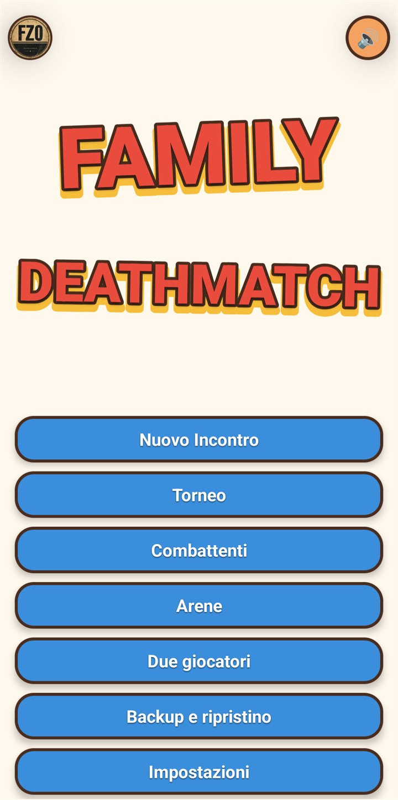
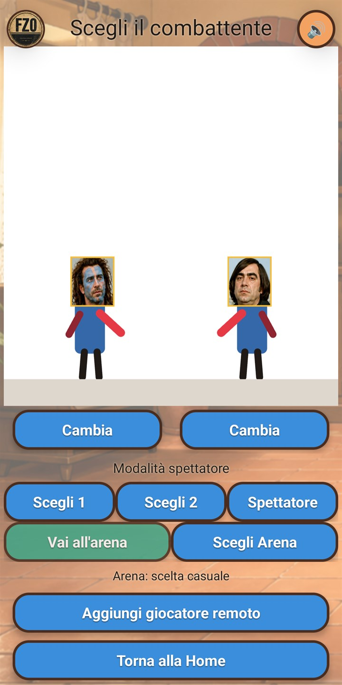
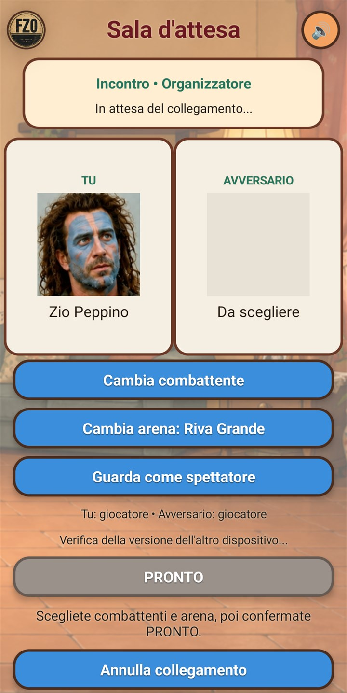
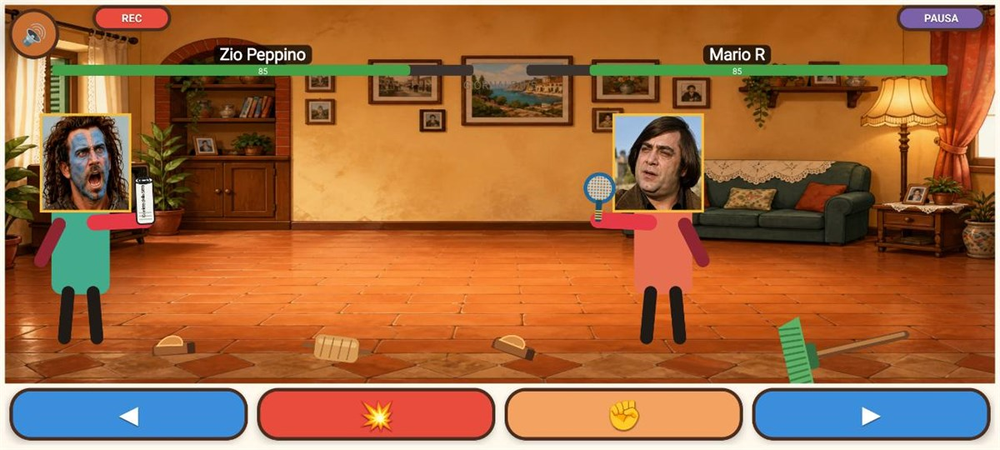

Mappa dell’app
Da Home si raggiungono tutte le funzioni principali. Le frecce mostrano il percorso più comune.
Home

| Pulsante | Funzione |
|---|---|
| Logo FZO | Apre le anteprime di Tournament Premium e Family Deathmatch RR. |
| 🔊 / 🔇 | Disattiva o riattiva i suoni dell’app. Il comando è disponibile anche nelle lobby e nell’arena. |
| Nuovo Incontro | Prepara un incontro singolo con due combattenti della raccolta. |
| Torneo | Apre la modalità Premium con tabelloni da 4, 8 o 16 partecipanti. |
| Combattenti | Crea, modifica, importa e condivide combattenti; mostra statistiche e storico. |
| Arene | Crea, modifica, importa e condivide arene personalizzate. |
| Due giocatori | Cerca incontri e tornei disponibili su dispositivi vicini. |
| Backup e ripristino | Salva o ripristina raccolta, storico e tornei in un archivio esterno. |
| Impostazioni | Gestisce Premium, backup automatico, difficoltà, suggerimenti, termini e crediti. |
Lobby dell’incontro singolo

- Cambia sostituisce uno dei due combattenti.
- Scegli 1 o Scegli 2 assegna al giocatore quel combattente; l’altro è controllato dal gioco.
- Spettatore avvia un incontro controllato interamente dal gioco.
- Scegli Arena seleziona un’arena preinstallata o personale. Senza scelta, l’arena viene sorteggiata.
- Aggiungi giocatore remoto trasforma la partita in un incontro multiplayer e apre la sala d’attesa dell’organizzatore.
Creare, condividere e importare
Combattenti
- Apri Combattenti → Nuovo combattente e scegli una fotografia.
- L’app individua localmente i volti: tocca quello da usare.
- Imposta nome, orientamento, eventuale ribaltamento, forza e fino a due fotografie alternative, quindi salva.
- In I miei combattenti puoi modificare, eliminare o condividere il combattente come archivio
.fdmcombattente. - Il destinatario usa Importa combattente per aggiungerlo alla propria raccolta.
Arene
- Apri Arene → Nuova Arena e scegli un’immagine.
- Sposta il riquadro sull’area da usare, assegna un nome e abilita Pavimento solo se i personaggi sembrano sospesi.
- In Le mie arene puoi modificare, eliminare o condividere l’arena come archivio
.fdmarena. - Il destinatario usa Importa arena per conservarla nella propria raccolta.
La condivisione usa il normale menu Android. FZO non riceve né conserva immagini, combattenti o arene.
Torneo e statistiche

- La modalità Torneo richiede Premium sul dispositivo organizzatore e offre tabelloni da 4, 8 o 16 combattenti.
- Tocca un partecipante o usa Cambia per sostituirlo. I doppioni sono consentiti; Nuovo sorteggio ricrea il tabellone.
- Inizia torneo apre il tabellone. Prima di ogni incontro scegli il combattente da controllare oppure la modalità spettatore e l’arena.
- Salva torneo permette di riprendere in seguito; Carica torneo apre i salvataggi; Albo d’oro raccoglie i vincitori.
- Un giocatore remoto può essere aggiunto prima del primo incontro.
Le statistiche registrano partite, vittorie, sconfitte, serie, ultimo risultato e avversario. Il bilancio dei risultati può modificare la forza effettiva e l’energia iniziale; lo storico indica anche modalità, arena e data dell’incontro.
Multiplayer tra dispositivi vicini

Apri Due giocatori e avvia Cerca incontro/torneo. I telefoni devono essere vicini: non serve una connessione Internet, ma Android può richiedere autorizzazioni per dispositivi nelle vicinanze, Bluetooth, Wi‑Fi o posizione.
FDM ↔ FDM
- L’organizzatore crea la sessione da Aggiungi giocatore remoto; l’altro dispositivo la trova da Due giocatori.
- Ogni partecipante sceglie il proprio combattente e può giocare o guardare come spettatore. L’organizzatore sceglie l’arena.
- Quando combattenti, arena e versioni sono compatibili, entrambi confermano PRONTO.
- Il dispositivo organizzatore è sempre l’autorità: calcola gioco, energia, collisioni, armi e risultato; l’ospite applica lo stato ricevuto.
FDM Premium → FDM Free
Un dispositivo Premium può organizzare un torneo e invitare un dispositivo Free. L’ospite Free sceglie un proprio combattente, viene inserito nel tabellone e gioca i propri incontri o segue gli altri come spettatore. Non deve acquistare Premium.
Family Deathmatch RR → FDM
FDM può collegarsi a una sessione compatibile organizzata da Family Deathmatch RR. Riceve temporaneamente combattenti, arena e stato dell’incontro; la simulazione resta sempre autorevole sul dispositivo FDM-RR. Se la sessione assegna controlli compatibili, FDM mostra movimento, attacco, raccolta e le azioni TAG/Rissa Reale previste; altrimenti funziona come replica spettatore.
I contenuti ricevuti nel multiplayer sono usati per la sessione e non vengono importati automaticamente nella raccolta personale.
Comandi nell’arena

Al termine dell’incontro, RIPETI avvia una rivincita; nel torneo diventa AVANTI e riporta al tabellone. Dopo la registrazione puoi salvare il video in Filmati/Family Deathmatch, condividerlo oppure eliminarlo.